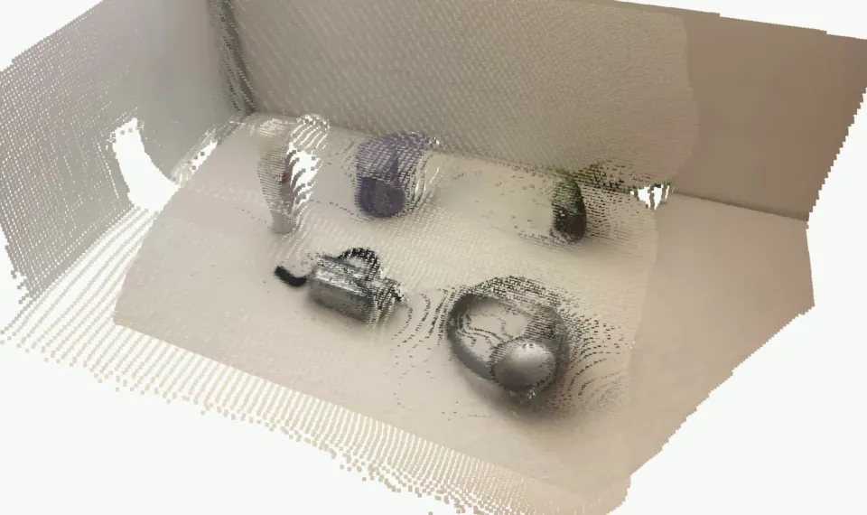
An object detector answers what is visible in one frame. A record of a table has to answer what is on the table, where, and since when, including while a hand or another object blocks the view. Omni builds that record from two fixed iPhones streaming colour and LiDAR depth. Its perception is a 0.61-million-parameter RGB-D network, trained on HO-Cap and OCID, that labels objects, hands and the contacts between touching objects, and runs on a laptop CPU. On thirteen HO-Cap recordings it had never seen, each scored once under rules fixed in advance, it tracked more objects than the depth-only detector it replaced on twelve, and in the last validation round it passed all 30 gates on five recordings. Trained alongside OCID, it nearly doubled its accuracy on objects it had never seen. The scene record it feeds keeps an object until a camera sees its place empty, and marks a remembered position as remembered.
What Omni does
Two iPhones with rear LiDAR stand on either side of a table, fixed in place, and stream colour and depth over USB to a laptop through Record3D. Each phone is calibrated to a shared table frame (Figure 1). Several times a second the laptop segments each phone's frame, matches the objects the two phones see, updates a record of the table, and draws everything in the Rerun viewer: each camera with its tracked objects, the record in 3D and from above, and a log of changes. The record can be asked where an object is and what has changed since a given time.
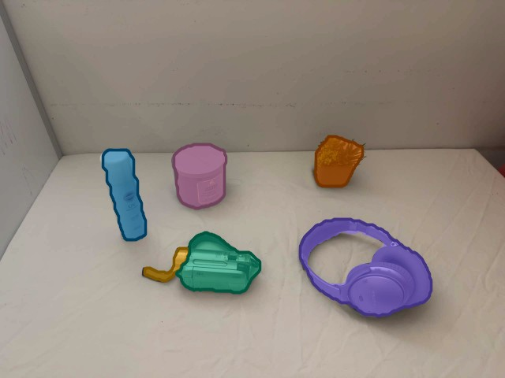
The problem is narrower than general scene memory. Khronos [1] and Hydra [2] build metric-semantic models of whole buildings that change over time, and ConceptGraphs [3] attaches open-vocabulary descriptions to the objects it maps. Omni keeps one small scene and asks of each object whether the evidence still supports it. The answer depends on perception more than on anything else: an object that is never segmented is never recorded. Most of the work on Omni went into perception, and most of this article is about it.
Why train a segmenter
The first perception was geometric. With the table plane known, every connected region of depth standing above it became an object. It needs no training and works for upright objects on a bare table, but three common cases defeat it: objects whose tops are within about 2.5 cm of the table (a flat box, a spatula), objects that touch from a camera's viewpoint and merge into one region, and an object gripped from above, which merges with the hand. A separate hand detector also took 125 of the 135 ms of perception per phone frame.
Pretrained open-vocabulary models were tried first. YOLOE, prompted with object descriptions and run on the laptop CPU, matched 97 of 420 annotated objects on HO-Cap evaluation frames, and Grounding DINO Tiny did not fit in the laptop's memory budget. The alternative was a small network trained for exactly this scene: a fixed camera looking down at a table, with depth.
Training data
Two public datasets supply labelled RGB-D frames of objects on tables. HO-Cap [4] records people handling objects on one table, seen by a calibrated multi-camera rig, with per-pixel object and hand labels. Thirteen recordings already used for development or spent in earlier validation rounds were used for training, from the two cameras Omni replays: 3,120 labelled views. The recording replayed in Omni's demo is refused by the data-cache builder, so the network never trains on the scene it is shown on. OCID [5] has 2,390 labelled frames of up to 20 objects, touching and stacked, on wood, striped and patterned tables and on plastic, wood and carpet floors. Its ARID10 and ARID20 sequences were used for training; YCB10, with different objects, was held out.
Each pixel gives the network five numbers: red, green, blue, the height of that point above the table plane (clipped to −5 to 30 cm), and whether the depth there is valid. Height rather than raw depth makes the input independent of where the camera stands. HO-Cap heights come from the published calibration. OCID has no table calibration, so its heights come from the dominant plane found in each frame, as Omni finds it for a phone with no calibration tag. Training crops are rescaled by 0.75 to 2.2, flipped and colour-jittered; the bare table alone is recoloured so the network sees other tables; and depth is smoothed, noised, tilted and holed to resemble a phone's LiDAR.
frame 92, 4 objects
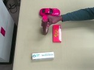
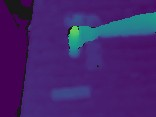
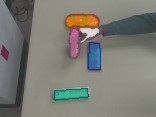
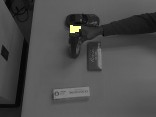
frame 75, 4 objects
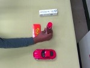
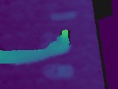
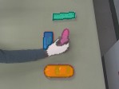
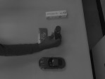
frame 17, 17 objects
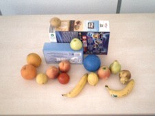
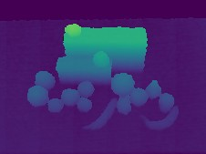
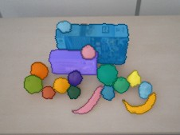
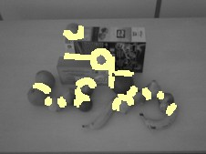
frame 1, 2 objects
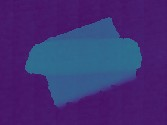
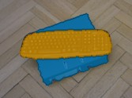
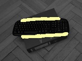
Training the network
The network is a MobileNetV2 encoder [6] initialised from ImageNet weights, with its first convolution widened from three input channels to five, and a four-level feature-pyramid decoder [7] back to full resolution: 0.61 million parameters. It has two outputs per pixel: a class (background, object or hand) and the probability that the pixel lies on a contact between two objects. The loss sums cross-entropy on the class, with objects weighted twice; binary cross-entropy on the contact output, with contact pixels weighted eight times and object pixels emphasised; and half a Dice loss on the object class. Training uses AdamW at a learning rate of 2×10−3 with a 200-step warm-up and cosine decay, in batches of twelve 192×256 crops, for 3,000 to 4,000 steps. On the laptop CPU a run takes 25 to 42 minutes. The trained weights are exported to ONNX and run through OpenCV's DNN module, so the product carries no deep-learning runtime, and the file's SHA-256 is pinned in the configuration.
The choice of boundary target mattered most. A first run marked every object edge as boundary; thin objects were then boundary across their whole width, and held-out recall peaked early and fell as the network learned that target. Marking only the contacts between two objects let recall on the same held-out views rise steadily (Figure 4), and every later model uses the contact target.
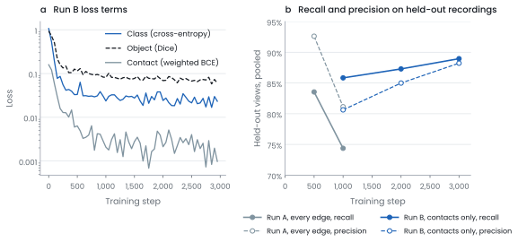
The network's outputs become objects in a fixed decoding step. Pixels with object probability of at least 0.5 are object pixels. Those whose contact probability is below a threshold form seed regions; seeds smaller than a minimum are dropped; each seed then grows back over its own object pixels, so touching objects divide along the predicted contact. Object regions no seed reaches, such as a thin handle, become instances of their own. The three settings were swept on the held-out development views and chosen before any untouched recording was scored (Figure 5).
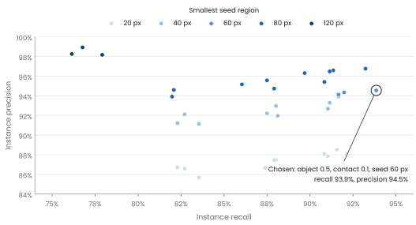
The segmenter also made perception faster. For two 640×480 views the median time fell from about 135 ms, with depth components and the hand detector, to about 66 ms. Through the live path with one phone-shaped camera, the per-frame work fell from 108 to 31 ms at the median, enough for 10 updates a second with no frame dropped.
Recordings it never saw
Each candidate model was validated in a round with fixed rules. The configuration was frozen and written down with the pass criteria before the recordings were chosen; recordings came from HO-Cap subjects and object groups the network had not trained on; each recording was scored once; and afterwards it joined the development set and was never used for validation again. Each recording has six gates on its tracked output: object recall, precision, track coverage, identity switches, and the median and 95th-percentile error of an object's location at rest against the dataset's labelled poses.
4 of 4 objects matched
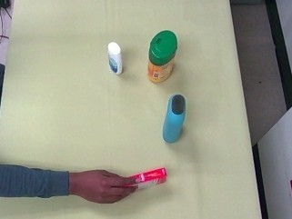
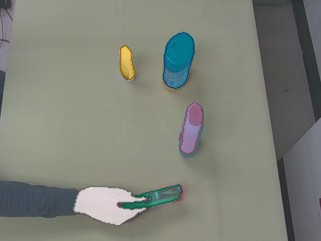
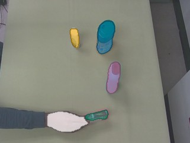
4 of 4 objects matched
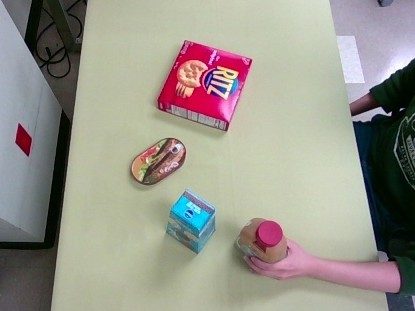
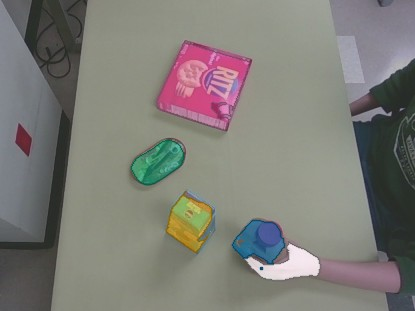
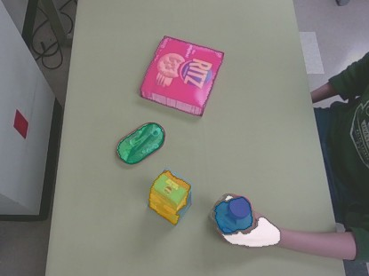
4 of 4 objects matched
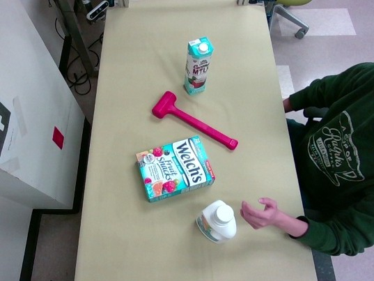
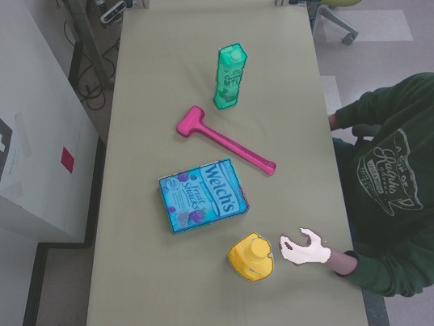
4 of 4 objects matched
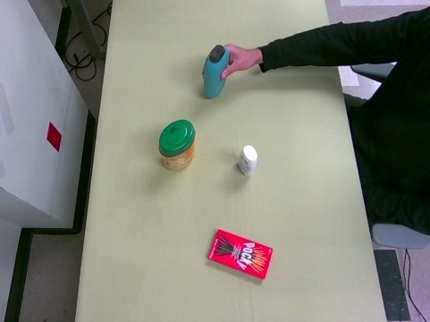
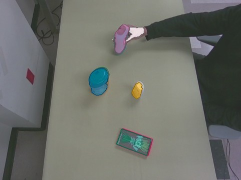
4 of 4 objects matched
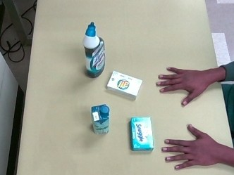
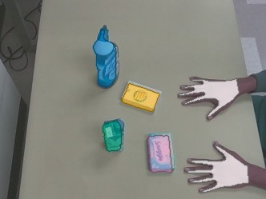
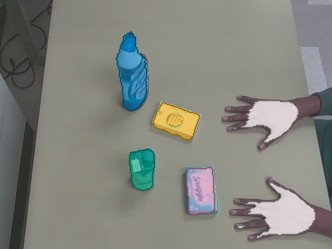
4 of 4 objects matched
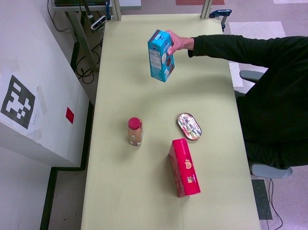
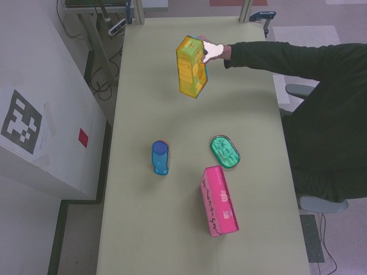
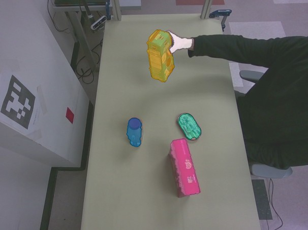
Three rounds tested the segmenter against the depth-component detector, thirteen recordings in all. The learned perception had higher recall than the depth detector on twelve of them, and each round's candidate passed more gates than the one before (Figure 8). The round-8 candidate passed all 30 gates on its five recordings, at 640×480 and at the phone's resolution.
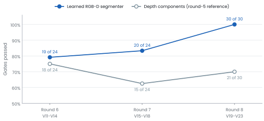
| Recording | Recall | Precision | Track coverage | Location at rest, median / p95 |
|---|---|---|---|---|
| V19 | 100% | 100% | 98.2% | 5.5 / 15.3 mm |
| V20 | 98.5% | 99.9% | 98.2% | 3.9 / 6.6 mm |
| V21 | 97.7% | 99.3% | 98.2% | 6.0 / 8.5 mm |
| V22 | 100% | 100% | 98.3% | 3.7 / 26.6 mm |
| V23 | 87.0% | 94.0% | 85.3% | 3.4 / 7.9 mm |
No identity switches, false removals or false events on any of the five, every occluded object kept its track, and every object was named correctly through the registry.
A different dataset
HO-Cap has one beige table, four objects per scene and one camera rig. Trained on it alone, the network reached an overlap F-measure of 42.0 on OCID's YCB10 sequences. Adding OCID's ARID scenes to training, with YCB10's objects still unseen, raised it to 78.3 (Figure 9). The measures follow the unseen-object segmentation literature and are reimplemented in tools/uois_metrics.py. For scale, published methods trained on about 280,000 synthetic scenes and run on a GPU reach 86 to 89 on all of OCID without having seen it [8]; the numbers here are on a held-out subset after seeing OCID's tables, from a 0.61-million-parameter model on a CPU. The released model is the one trained on both datasets.
1 objects · F 0.00 → 0.97
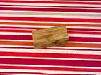
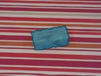
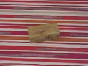
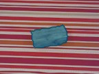
1 objects · F 0.26 → 0.96
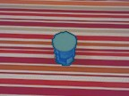
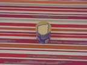
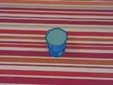
4 objects · F 0.28 → 0.82
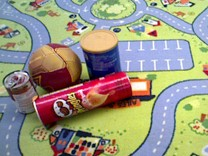
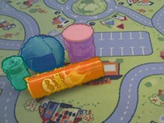
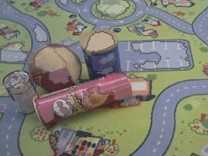
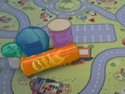
8 objects · F 0.35 → 0.77
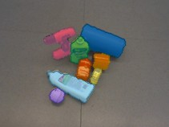
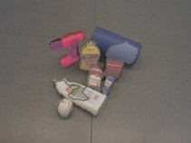
3 objects · F 0.56 → 0.97
| Training data | Overlap P / R / F | Boundary P / R / F | Objects with F ≥ 0.75 |
|---|---|---|---|
| HO-Cap only | 48.6 / 41.6 / 42.0 | 26.8 / 28.7 / 25.3 | 23.6% |
| HO-Cap and OCID ARID | 78.2 / 78.4 / 78.3 | 71.4 / 70.2 / 70.6 | 66.9% |
The rule for choosing between the two was written before either final model was trained: the mixed model is the candidate unless its YCB10 overlap F falls below the HO-Cap-only model's.
Improving between rounds
After each round its recordings became development data, and the next candidate was built on them. Three changes carried the round-8 candidate past its predecessors.
| Change | Measured effect |
|---|---|
| Run the network at the camera's 640×480 instead of 320×240 | V11 recall 65.2 → 97.7%, touching boxes separated |
| Reject an instance only for over-height pixels of its own, not the hand beside it | V13 recall 77.6 → 89.8% |
| Locate an object by the mean of its visible surface points | Location median 9.1 → 6.4 mm, mean over eight recordings |
A second line of work trained a per-pixel instance embedding, the approach UCN [10] uses for RGB-D unseen-object segmentation: eight extra output channels trained with a discriminative loss [9], which pulls the pixels of one object together and pushes different objects apart. The embedding learned the distinction it was meant to: the mean embeddings of two touching objects lay 2.4 to 4.0 apart, against 0.9 for two parts of the same object (Figure 10). Trained jointly with the other outputs it cost some segmentation accuracy, so the released model keeps the contact output, and the embedding is the starting point for the next instance head.
released model: 4 of 4 matched, 4 instances
The scene record
Each phone's instances become observations if their depth places them on the table, within the work area and below a height limit. Observations are matched across the two phones, then over time. A group across phones may hold at most one observation from each phone, and a group whose members disagree is withheld rather than forced. Over time, an observation either continues a track or starts one; when two tracks are nearly equally good matches, neither receives it, so identities are not swapped.
For each track the record keeps its position, when it was last observed, whether it is present, and whether that presence is current or retained. Three rules decide what changes.
- Seen. A matched observation updates the position and marks it current. A view covering less than 80% of the object's earlier surface, within 6 cm of it, is treated as partial and holds the earlier position for up to 10 seconds.
- Not seen. A missed observation changes only the age of the evidence. The object is still present; its position is now retained.
- Seen empty. Removal requires the last footprint to be projected into a healthy camera and found to be bare table: at least 90% of its samples with reliable depth and at most 2% above the table, repeated over several updates. An occupied view, or a disconnected camera, is no evidence of absence. The segmenter's object and hand pixels are excluded from the bare table, so a flat object still counts as occupying it.
The rules were tested on recorded data, so that the same perception output could be replayed through each policy, on HO-Cap recordings V11 to V23 with camera outages injected. When a static object was hidden, the record kept it in 65 of 65 episodes, and all 1,976 answers given from its retained position were correct. A timeout policy keeps a hidden object only if its limit outlasts the occlusion. Requiring evidence of absence before removing an object also reduced wrong answers on V11 to V18 from 5.35% to 2.93%.
On two iPhones
Each phone is calibrated without a printed tag. The table plane is fitted to its LiDAR depth over 30 frames and levelled with gravity: in the 23 October session, with residuals of 2.8 mm for phone 1 and 2.5 mm for phone 2. The second phone is then placed in the first phone's table frame by matching five objects both phones see. Figure 1 is that calibration at work: two independent depth images, from opposite sides, landing on one table. The released segmenter runs on each phone's full-resolution colour image at 640×480, about 107 ms per phone update.
The full system ran unattended for long periods on two phones without a reconnect.
| Run | Length | Updates | Reconnects | Receipt to log, p95 |
|---|---|---|---|---|
| Static run | 10 min | 1,200 | 0 | 358 ms |
| Unattended run | 10 min | 1,200 | 0 | 415 ms |
| Continuous demo mode | 30 min | 3,610 | 0 | 369 ms |
| Restart cycles | 5 × 1 min | 5 × 120 | 0 | 312–349 ms |
Next steps
- An instance head built on the learned embedding, to separate touching objects without splitting objects whose parts differ in colour.
- Training data with more hand–object contact, so that an object held in the hand is segmented apart from the fingers.
- A marked physical session on the phones, with positions measured against a printed target and changes performed and timed at the table.
References
- L. Schmid, M. Abate, Y. Chang and L. Carlone. Khronos: A unified approach for spatio-temporal metric-semantic SLAM in dynamic environments. RSS, 2024.
- N. Hughes, Y. Chang and L. Carlone. Hydra: A real-time spatial perception system for 3D scene graph construction and optimization. RSS, 2022.
- Q. Gu et al. ConceptGraphs: Open-vocabulary 3D scene graphs for perception and planning. ICRA, 2024.
- J. Wang et al. HO-Cap: A capture system and dataset for 3D reconstruction and pose tracking of hand-object interaction. 2024.
- M. Suchi, T. Patten, D. Fischinger and M. Vincze. EasyLabel: A semi-automatic pixel-wise object annotation tool for creating robotic RGB-D datasets. ICRA, 2019. OCID data: doi:10.48436/pcbjd-4wa12.
- M. Sandler, A. Howard, M. Zhu, A. Zhmoginov and L.-C. Chen. MobileNetV2: Inverted residuals and linear bottlenecks. CVPR, 2018.
- T.-Y. Lin, P. Dollár, R. Girshick, K. He, B. Hariharan and S. Belongie. Feature pyramid networks for object detection. CVPR, 2017.
- Y. Lu et al. Mean shift mask transformer for unseen object instance segmentation. 2022. Its tables report UOIS-Net-3D, UCN and MSMFormer on OCID.
- B. De Brabandere, D. Neven and L. Van Gool. Semantic instance segmentation with a discriminative loss function. 2017.
- Y. Xiang, C. Xie, A. Mousavian and D. Fox. Learning RGB-D feature embeddings for unseen object instance segmentation. CoRL, 2020.
Methods and attribution. The segmenter was trained with tools/train_segmenter.py in the Omni repository on a laptop CPU; validation rounds 6 to 8 are documented in the repository with their preregistrations. Figures 1 and 2 are computed from the raw Record3D packets and calibration of the recorded session of 23 October 2026: measured depth points placed by the phones' calibrated poses, and the masks Omni's live perception accepts. Figures 3, 6, 7, 9 and 10 show dataset frames, their published labels and model outputs on those frames, cropped. Figures 4, 5 and 8 are plotted with matplotlib directly from the training logs and result files; the script and data are kept with the article. Every script, data file and source is listed in figure-source. No image in this article was generated or altered by an AI model. Claude (Anthropic) helped write the figure scripts and draft the text; each number was checked against its source.